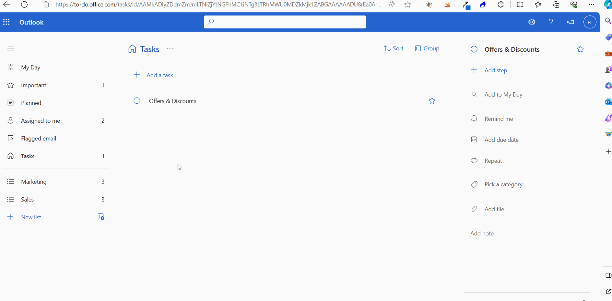
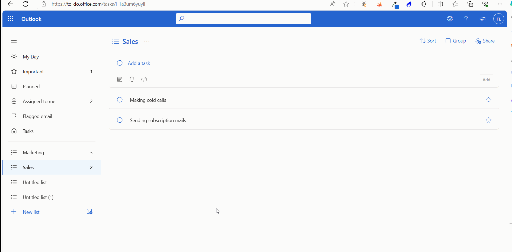

Working with Todo App in Microsoft 365
Note: Most of the images contained within this article are gifs. Click them to understand how Microsoft To dos work better.
The Microsoft 365 Todo app helps you create tasks and task lists that help you get your work done. You can also collaborate with others and work together on tasks by sharing task lists.
Accessing the Todo App the first time
- Login to Microsoft 365 using your credentials. .
- Click App Launcher >> Select Explore all your Apps . Then select the To Do app under the Productivity category.
Note: After you access the To do app for the first time, it becomes available under the Apps launcher.
Creating your first Microsoft 365 Todo
- Click the Add a task link. Enter the task details and click the Add button.
Note: By default, My Day section opens. This is where all the tasks that are due today (assigned to you by others or by yourself) get listed. You can also add tasks by going to Tasks section >> clicking Add a task link. Try adding one task using the Tasks section as shown in the image below.

Note: You’ll notice that the My Day section will list one task; whereas Tasks section would list two as shown in the image below. This is because when you add a task under My Day section, the due date is automatically considered as the current date (which you can modify to suit your requirements, if required).
Task With several steps
You can add several steps to the task as shown in the image. Steps help you break down a task.
Task Details Section
Once a task is created, you can add the following task details by clicking on the task.
- Add to My Day: lets you add the task to the My Day list. When you do this, the My Day task count increases as shown in the image below. (And when you remove the task from the My Day list, the My Day task count decreases).
- Set a reminder: lets you set a reminder for the task. Click Remind me option. This opens the Reminder dialog box. Set the remainder date as per your requirements.
- Add due date: lets you set a due date for the task. Click the Add due date option. This opens the Due dialog box. Set the due date as per your requirements.
- Repeat: let’s you set a repeat date for the task. Useful for recurring tasks to be performed on a weekly, monthly, yearly etc., basis. Click the Repeat option. The Repeat dialog box opens. Set the repeat date as per your requirements.
- Pick a Category: let’s you select a Category for the task. Click the Pick a Category option >> and select a category that suits your requirements.
- Add file: let’s you add or attach files to the task. You can upload your task related files using this option.
- Add note: let’s you add notes related to the task. Click the ‘Add note’ option and enter the note you wish to add.
Marking a Task as Important
This can be done in 2 ways:
- From outside the task: Click the star icon available to your right.
- From inside the task details section: Click the star icon available to your top right corner.
Note:Notice how Important task count gets updated when you mark a task as important. And also the task marked as important moves up the list.
Planned Tasks
Any task that has a due date assigned to it (be it past, present or the future) gets listed under the Planned section. Basically, all the tasks you have ‘planned’ get listed here. While you assign a due date to a task, notice that the Planned task count goes up as shown in the image below.
Note: The Planned task count goes down for the reverse action.
Assigned to me
Tasks getting listed under this section are tasks assigned to you by others in the Planner app. Read this article on Planner app to know more about how others can assign tasks to you using Planner app.
Flagged email
The emails you flag as important in the Outlook app get listed in this section. Because these emails might contain important task-related information.
Sorting and Grouping Tasks
- You get to sort tasks based on the following criteria: Importance, Due date, Added to My Day, Alphabetically and Creation Date as shown in the image below.
- You also get to group the tasks based on the various categories available. Tasks that haven’t been assigned any category are listed get listed as Uncategorised.

Moving and Copying Tasks
You can move a task from one task list to another by right-clicking the task >> and selecting the Move task to option.
You can copy a task from one task list to another by right-clicking the task >> and selecting the Copy task to option.
Note: The copied task is different from the task it is being copied. Both can have their own due dates, category, files etc.,
Note: Check out creating a task list section to understand what task lists are
Deleting Tasks
This can be done in 2 ways:
- By right clicking the task >> and selecting the Delete task option. 
- By clicking the task >> and selecting the Delete button from the task details pane.

Modifying the Tasks theme
- Click the ‘…’ icon >> and Change theme >> and Select the color you wish to set as theme for the tasks, as shown in the image below.
Creating a task list
A task list helps you group similar tasks under one group. You could have a ‘Marketing’ task list where each of your marketing activity (be it social media or email related) can be a separate task.
- Click the New list, enter a task list name [Example: Marketing] and press Enter.
- The task list gets created.
Note: You can create task within a task list just as you would create an individual task; only difference is the tasks get added to the task list.
Creating a task list from a task
Normally a task list is created and tasks are added to it. But you can do it the other way around too. That is, create a task list from a task. You can do so by right clicking a task >> and selecting the Create new list from this task option as shown below.
Note: Once the task list gets created, give it an appropriate name.
Sharing a task list
Task lists help you collaborate and work together with others. You can share a task list with others in the following 2 ways:
- Using the Share Icon on the top right corner
- Click the Share Icon.
- Click the create invitation link button.
- Send the invitation link via email or some other means.
- By right clicking the task list name on the left pane
- Click the Share Icon.
- Click the create invitation link button.
- Send the invitation link via email or some other means.
Notes:
- Users have to accept the invitation to join the task list and start collaborating
- Everyone part of the shared task list has the same right. For example, ff someone marks a task as important, it reflects in the task list of others as well.
- Anyone with the invitation link can join the task list. But you can limit access to current members only by selecting Manage Access >> and turning on Limit access to current members >> then clicking Stop Sharing button.
- Members can leave the task list anytime by clicking the Leave list option.
Duplicating a task list
When you duplicate a task list all the tasks present in the list get cloned, but not the members you might have shared the original task list with. So, you’ll have to reshare the task list with the members once again.
Deleting a task list
This can be done in 2 ways:
- By clicking the ‘…’ icon >> and selecting the Delete list option.
- By right clicking the task list name in the left pane >> and selecting the Delete list option.
To do settings
The To do settings option in the Settings menu provides you with controls that help you customize the To do app to suit your requirements. For example, you can choose to:
- Not display the confirmation message that appears before a user deletes a task
- Prevent the newly added task from being placed at the top
- Hide the Planned tasks section
- Disconnect Planner and Outlook apps
- Turn off email notifications
To access the To Do Settings option, click the Settings icon >> and select the To Do Settings option.
You can modify the To do Settings as shown in the image.